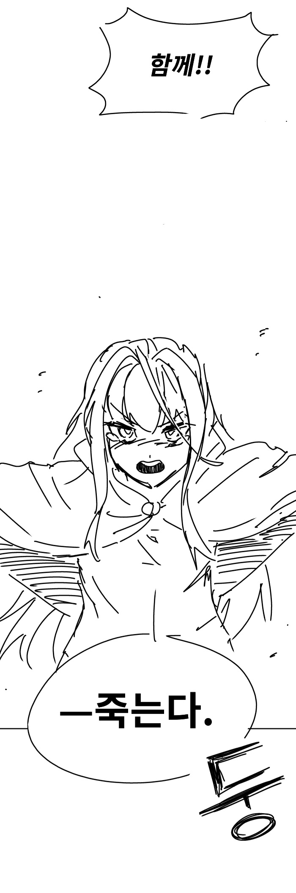

— · 14 · 2026-11-05 23:55:03 · 원문

http://x.com/laot_h
속편 곧 올림
수집 당시 댓글 14개
ㅇㅇ · 11.04 20:02:23
가면군 · 11.04 20:09:41
Kiri · 11.04 20:55:12
피타라텔레스 · 11.04 23:27:53
카갤러1 · 11.05 02:10:44
너누나노 · 11.05 02:20:28
상당군 · 11.05 10:53:52
땨뗘(봇) · 11.05 23:55:06
ㅇㅇ · 11.05 23:59:35
ㅇㅇ · 11.06 00:01:54
환란 전 교회 휴거 · 11.06 00:20:22
사이버드래곤다이스키청년 · 11.06 01:25:51
ㅇㅇ · 11.06 02:26:48
JungNu · 11.06 21:15:26
댓글
수집 당시 댓글 14개
ㅇㅇ · 11.04 20:02:23
가면군 · 11.04 20:09:41
Kiri · 11.04 20:55:12
피타라텔레스 · 11.04 23:27:53
카갤러1 · 11.05 02:10:44
너누나노 · 11.05 02:20:28
상당군 · 11.05 10:53:52
땨뗘(봇) · 11.05 23:55:06
ㅇㅇ · 11.05 23:59:35
ㅇㅇ · 11.06 00:01:54
환란 전 교회 휴거 · 11.06 00:20:22
사이버드래곤다이스키청년 · 11.06 01:25:51
ㅇㅇ · 11.06 02:26:48
JungNu · 11.06 21:15:26